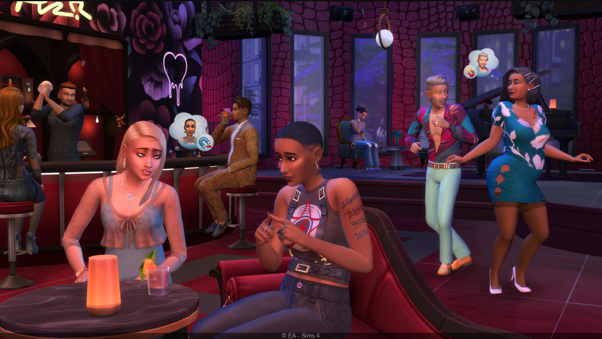

Spel jag gillar
jag heter jasmine och jag gillar att spela spel, här är mina 3 spel som jag gillar att spela
GTA 5
Grand Theft Auto V, vanligtvis förkortat till GTA V, är ett TV-spel i actiongenren utvecklat av Rockstar North och gavs ut av Rockstar Games den 17 september 2013 till Playstation 3 och Xbox 360, samt den 18 november 2014 till Playstation 4 och Xbox One. En PC-version släpptes den 14 april 2015.

sims 4
The Sims 4 är ett relationsspel från utvecklaren Maxis och det fjärde i The Sims-serien. Utgivaren Electronic Arts bekräftade att spelet var under utveckling 6 maj 2013.[2] I Sverige och Europa gavs spelet ut för PC 4 september 2014, både som fysisk kopia och digital för nedladdning. 17 februari 2015 kom det även för Mac-datorer. Det släpptes sedan för både Playstation 4 och Xbox One 17 november 2017. Sedan 18 oktober 2022 är basspelet gratis att ladda ner och spela.[3]
Coaster Planet
Planet Coaster 2 är ett konstruktions- och hanteringssimuleringsvideospel utvecklat och publicerat av Frontier Developments. Det är en uppföljare till Planet Coaster. Spelet släpptes på Microsoft Windows, PlayStation 5 och Xbox Series X den 6 november 2024.